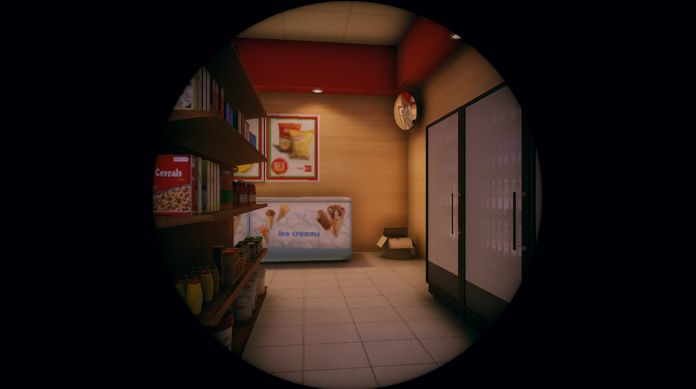
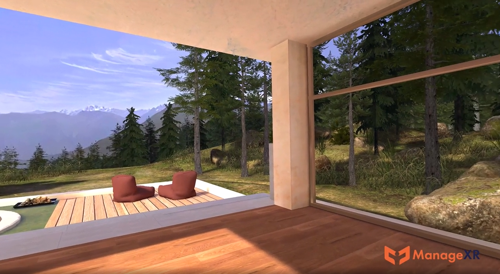
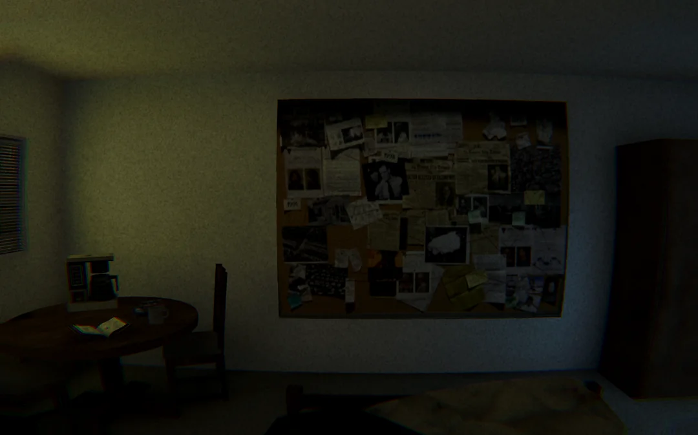

Oasis reunion and a year with (almost) no social media
The great wait is over.
This guide will help you customize the look and feel of your Gorky website. Most customization is done through styles/theme.css - this is where you'll find all the important theme-related properties like colors, fonts, and spacing.
theme.cssstyles/theme.css is where most customization happens. This file contains all theme-related CSS properties organized for easy customization:
Simply edit styles/theme.css to change your site's appearance. Most users won't need to touch the other CSS files.
While theme.css handles most customization, the styles are organized into several files:
styles/theme.css ⭐ - Most important! Contains fonts, colors, and theme propertiesstyles/base.css - CSS reset and container layout (rarely needs editing)styles/layout.css - Layout structure, padding, margins (structural properties)styles/navigation.css - Navigation structure and layout (not colors)styles/content.css - Content structure, spacing, typography structurestyles/mobile.css - Mobile-specific stylesstyles/responsive.css - Responsive breakpoints and adjustmentsThe main font for all content is set in styles/theme.css:
body {
font-family: -apple-system, BlinkMacSystemFont, 'Segoe UI', Roboto, Oxygen, Ubuntu, Cantarell, sans-serif;
}
To change it, edit styles/theme.css and replace with your preferred font:
body {
font-family: 'Your Font Name', sans-serif;
}
Using Google Fonts:
Add the font link in index-template.html (in the <head> section):
<link href="https://fonts.googleapis.com/css2?family=Inter:wght@400;600&display=swap" rel="stylesheet">
Update styles/theme.css:
body {
font-family: 'Inter', sans-serif;
}
Popular font choices:
'Inter', sans-serif - Modern, clean sans-serif'Merriweather', serif - Readable serif font'Playfair Display', serif - Elegant serifCode blocks and inline code use a monospace font. Edit styles/theme.css:
#markdown-content code,
#markdown-content pre {
font-family: 'JetBrains Mono', 'Courier New', monospace;
}
Popular monospace fonts:
'JetBrains Mono' - Modern monospace (already included via Google Fonts)'Fira Code' - Programming font with ligatures'Source Code Pro' - Clean code fontAll color customization happens in styles/theme.css. This is much simpler than before!
Sidebar background:
.sidebar {
background-color: #f5f5f5;
}
Sidebar text colors (idle state):
.sidebar-header h1 {
color: rgb(0, 0, 0);
}
.nav-link {
color: rgba(0, 0, 0, 0.6);
}
.section-title {
color: rgba(0, 0, 0, 0.75);
}
Sidebar text colors (hovered state):
.nav-link:hover {
background-color: rgb(188, 188, 188);
color: rgba(0, 0, 0, 0.8);
}
Sidebar text colors (selected/active state):
.nav-link.active {
background-color: #000000;
color: rgb(255, 255, 255);
}
Content background:
.main-content {
background-color: #ffffff;
}
Content text color:
#markdown-content {
color: inherit; /* Uses default browser text color */
}
Content links:
#markdown-content a,
#tag-posts-list h2 a,
.post-link,
.post-tags .tag-link {
color: #0066cc;
font-weight: 600;
}
#markdown-content a:hover,
#tag-posts-list h2 a:hover,
.post-link:hover,
.post-tags .tag-link:hover {
color: #0052a3;
}
All links in your content (blog posts, tag links, post list links) use the same color and weight for consistency.
Blockquotes are styled in styles/theme.css:
#markdown-content blockquote {
border-left: 4px solid #0066cc;
color: #666;
}
The border color matches your link color by default, but you can customize it.
Footer colors are also in styles/theme.css:
.sidebar-footer {
background-color: #000000;
}
.footer-text,
.footer-link {
color: rgba(255, 255, 255, 0.6);
}
.footer-link:hover {
color: rgba(0, 0, 0, 0.8);
}
Content line spacing is controlled in styles/theme.css:
.main-content {
line-height: 1.7;
}
Adjust this value to make text more or less spaced. Common values:
1.5 - Tighter spacing1.7 - Default (comfortable reading)1.8 - More breathing room2.0 - Very spaciousAll in styles/theme.css:
.sidebar {
background-color: #f5f5f5;
}
.main-content {
background-color: #ffffff;
}
#markdown-content a {
color: #0066cc;
}
.nav-link.active {
background-color: #000000;
color: rgb(255, 255, 255);
}
Edit styles/theme.css:
.sidebar {
background-color: #1a202c;
}
.main-content {
background-color: #2d3748;
}
#markdown-content {
color: #e2e8f0;
}
.nav-link {
color: rgba(255, 255, 255, 0.7);
}
.nav-link:hover {
background-color: #4a5568;
color: rgba(255, 255, 255, 0.9);
}
.nav-link.active {
background-color: #4a5568;
color: rgb(255, 255, 255);
}
#markdown-content a {
color: #63b3ed;
}
.sidebar-footer {
background-color: #1a202c;
}
.footer-text,
.footer-link {
color: rgba(255, 255, 255, 0.6);
}
.sidebar {
background-color: #e3f2fd;
}
.nav-link.active {
background-color: #1976d2;
color: rgb(255, 255, 255);
}
.nav-link:hover {
background-color: #bbdefb;
}
#markdown-content a {
color: #1565c0;
}
#markdown-content blockquote {
border-left: 4px solid #1976d2;
}
Start with theme.css: This file contains 90% of what you'll want to customize. Edit this first!
Test your changes: After modifying CSS, run gorky build and check index.html in your browser.
Browser DevTools: Use your browser's developer tools (F12) to inspect elements and test color changes in real-time before editing files.
Keep it organized: All theme-related properties are in theme.css - use that as your main customization file.
Check file comments: Each CSS file has comments at the top explaining what it controls.
styles/theme.css first - most customization is thereWelcome! This guide will help you set up and customize your Gorky site.
If you haven't already, install Gorky:
npm install -g gorky
Or install locally in your project:
npm install --save-dev gorky
Build your site using the Gorky CLI:
gorky build
Or use npm:
npm run build
This generates index.html from your markdown files.
Edit site-config.js in your project root to customize site-wide settings:
module.exports = {
baseUrl: 'https://yourusername.github.io/your-repo', // Your GitHub Pages URL
siteName: 'My Site', // Your site name
authorName: 'Your Name', // Default author name
defaultDescription: 'Your site description...', // Default meta description
defaultKeywords: 'keyword1, keyword2', // Default meta keywords
favicon: 'favicon.ico', // Optional: path to favicon
appleTouchIcon: 'apple-touch-icon.png' // Optional: path to Apple touch icon
};
This configuration is automatically injected into your site during the build process.
Important: Update baseUrl to match your GitHub Pages URL. For example:
username/my-site, use: https://username.github.io/my-siteusername/username.github.io, use: https://username.github.ioThese settings are also used for:
Edit site-config.js to customize your navigation. The sidebar configuration is in the sidebar property:
module.exports = {
// ... other config ...
sidebar: {
// Sidebar header text (displayed at top of sidebar)
header: 'My Site',
// Display names for main navigation items
homeDisplayName: '🏠 Home',
postsDisplayName: '✍️ Posts',
// Sidebar footer items (array of text items or links)
footer: [
{
text: '2025 © Your Name',
target: 'https://yourusername.github.io'
}
],
// Navigation sections (object where keys are section titles, values are navigation items)
sections: {
// Empty section name creates items without a section header
'': {
'📝 About': {
target: '?page=about',
openInNewTab: false
}
},
'Links': {
'GitHub': {
target: 'https://github.com/yourusername',
openInNewTab: true
}
}
}
}
};
Navigation items in sections have the format: label: { target: 'url', openInNewTab: boolean }. Use ?page=filename for internal pages (without .md extension) or full URLs for external links.
Post files can have any filename you want. All metadata is defined in YAML frontmatter at the top of each markdown file.
Post metadata is defined in YAML frontmatter at the top of each markdown file:
---
slug: my-first-post
title: My First Post
date: 2025-12-15
tags: blog,tutorial
description: This is a preview of my first post
thumbnail: content/images/my-image.jpg
keywords: keyword1, keyword2
author: Author Name
---
# My First Post
Your content here...
Required fields:
slug - Unique identifier for the post (used in URLs like ?post=my-first-post)title - The post titledate - Publication date (format: YYYY-MM-DD or YYYY-M-D)Optional fields:
tags - Comma-separated tags (e.g., blog,tutorial) or array formatdescription - Description text shown in the posts listing (also used as meta description for SEO)thumbnail - Thumbnail image path (relative to content root, e.g., content/images/thumb.jpg)keywords - Comma-separated keywords for SEO meta tagsauthor - Author name for the post (falls back to SITE_CONFIG.authorName if not provided)published - Set to false to hide a post (defaults to true)💡 You can directly visit
<URL>?post=slugto land on a specific post.
Add a favicon to your site:
favicon.ico file (16x16 or 32x32 pixels)index.html)apple-touch-icon.png (180x180 pixels) for iOS devicesfavicon.ico)To customize the favicon path, edit site-config.js in your project root:
const SITE_CONFIG = {
// ... other config
favicon: 'favicon.ico', // Path to favicon
appleTouchIcon: 'apple-touch-icon.png' // Path to Apple touch icon
};
Any markdown file in the content/ directory (not in posts/) can be a custom page. Add frontmatter for SEO:
---
title: About
description: Learn more about this site
keywords: about, information
---
# About
Your page content...
Link to custom pages from your sidebar by referencing them with ?page=filename (without the .md extension). For example, to link to content/about.md, use ?page=about in the sidebar configuration in site-config.js.
💡 You can also directly land on a page using
?page=filenamein the browser address bar.
my-site/
├── content/
│ ├── home.md # Your home page content
│ ├── posts/ # Blog posts directory
│ │ └── *.md # Posts with YAML frontmatter (any filename)
│ ├── images/ # Images directory
│ └── posts.md # Auto-generated posts listing (don't edit)
├── styles/ # CSS styling files
├── index-template.html # HTML template (don't edit, auto-generated from site-config.js)
├── index.html # Generated HTML (auto-generated, don't edit)
├── gorky.config.js # Optional configuration file
├── package.json # Node.js dependencies
└── README.md # Documentation
index.html (usually main or gh-pages)https://yourusername.github.io/repository-nameTip: If you want your site at username.github.io, create a repository named exactly username.github.io and set baseUrl in site-config.js to https://username.github.io.
Create a gorky.config.js file to customize paths:
module.exports = {
contentDir: 'content',
outputFile: 'index.html',
templateFile: 'index-template.html',
stylesDir: 'styles'
};
Hi, I'm Vatsal👋
I make games, apps, art, tools, and more with the Unity engine.
Presently I am employed at ManageXR where I develop our Unity VR application and SDKs. You can see my professional and education background on LinkedIn.
My open source work is on Github. One of my more popular projects is UniVoice for audio networking in Unity.
Aside from my day job and open source work, I try to always have a game project in progress. You can play the games I have developed games on adrenak.itch.io.
There are some more things that I work on. These projects aren't dead, I just don't get to dedicate the amount of time I would like:
You'll find here my blog, work, and relevant links.
If you like how this website looks, check out Gorky which is the simple markdown based static site generator I made for this website.
Email me at ambastha.vatsal@gmail.com
I'm on Discord. My username is adrenak. You're welcome to join my Discord server, especially if you're looking for UniVoice help or updates.
UniVoice has been around since Jan 2019 and has been evolving towards becoming a robust VoIP solution for Unity. Recently I released version 4.x, which is a big upgrade from v3. One of the things that's changed is that UniVoice is now a mono repo.
Previously the main repository only housed the interfaces and implementations for them were separate repositories.
This caused a lot of pain for both me and any users of UniVoice.
For me because if I wanted to change something in, let's say, the univoice-unimic-input repository. I would need to open UniVoice, change the manifest to point to a local copy of the univoice-unimic-input repo so that I can test the changes locally.
For users because when they'd install the univoice package, it wouldn't really have anything usable. They'd need to install implementation packages separately. In v3, to get UniVoice to work you needed at implementations of at least three interfaces: IAudioInput, IAudioOutput and IChatroomNetwork.
This isn't readily obvious. The first reason is that there just isn't enough documentation (something I'll be working on soon). The second is that unless you know how UniVoice works or examine the inner workings of a sample project (again a separate repository), you probably wouldn't know UniVoice mainly works using those three interfaces.
So simplification and ease of maintenance were the major motivations for moving all the implementations to the main repository.
Instead of importing packages of implementations, the implementations are now included in the main repository. You can find them here.
Working out of the box First, UniVoice now has package dependencies. They include
Using the dependencies above, the following implementations have been written and included in the univoice package out of the box:
UniVoice can also have inbuilt implementations that depend on code that's not included as a package dependencies. Right now, this is the Mirror network implementation.
Observe that each file uses the compilation symbol UNIVOICE_MIRROR_NETWORK.
The reason for this is that univoice doesn't include Mirror by default. So if you want voice chat in a Mirror game, you have to import Mirror and add that compilation symbol.
All future network implementations, let's say FishNet, Netcode would be added as inbuilt implementations this way. You'd need the supported network solution in your project and add a compilation symbol.
Note that the Mirror implementation also uses brw, which is a package dependency as mentioned above. Chances are all future network implementations would use it to read and write network messages.
Say you want an implementation that depends on external code. Let's say it's an IAudioFilter for removing noise from mic input before sending it.
You have a package called com.denoise which has some native library for removing noise from audio data. You add it to your manifest.json as a dependency. Then write DenoiseFilter which would be an implementation of IAudioFilter which uses the code in com.denoise to achieve the filter's capabilities.
UniVoice was updated to 4.2.0 recently with the key change being that RNNiose is now supported.
RNNoise is an amazing audio noise removal library that I've seen excellent results with. Background noise such as traffic, ambient noise are almost completely gone.
It is available in UniVoice 4.2.0 as an IAudioFilter implementation called RNNoiseFilter and is a one-line integration. RNNoiseFilter class internally uses RNNoise4Unity, a repository I made that simply makes it available as a UPM package.
Since RNNoise4Unity uses native libraries, it has not been made a direct dependency of UniVoice. Only a RNNoiseFilter.cs is provided with UniVoice that can be activated using UNIVOICE_FILTER_RNNOISE4UNITY after you import RNNoise4Unity into your project.
Not adding packages that rely on native libraries to UniVoice dependencies is something I'm going to continue. I have highlighted in the 4.2.0 commit the following:
UniVoice includes and installs the dependencies mentioned above along with itself.
The following implementations are available out of the box when you install it:
GaussianAudioBlur filter (plain C#, no dependencies used) But the following implementations are based on dependencies that you have to install and enable via compilation symbols as they are not UniVoice dependencies and don't get installed along with UniVoice. This is because they are either third party modules or based on native libraries (not plain C#) that can pose build issues.
UNIVOICE_NETWORK_MIRROR to activate itUNIVOICE_FILTER_RNNOISE4UNITY to activate itRNNoiseFilter is an input filter, because it is applied to the audio captured at the devices. To use it, simply add this to your integration:
session.InputFilters.Add(new RNNoiseFilter());
where session is a ClientSession object
A lot has changed between UniVoice v3 and v4, however I've tried to keep the new things "mirror" some old patterns as much as possible.
There's no way to upgrade from v3 to v4 without code changes, so getting familiar with some key changes can help.
In this post I'll be comparing the sample code for v4 and v3 and try to describe the differences that have been made.
In v3 you'd have noticed these namespaces
Adrenak.UniVoice.UniMicInput
Adrenak.UniVoice.AudioSourceOutput
Adrenak.UniVoice.AirPeerNetwork
This is a remnant of the previous multi-repo approach where each repo had their own namespaces. UniVoice changed to a mono-repo one as described in an earlier post with the key reason being ease of maintenance and integration.
From v4 onwards, you can expect to need only the following namespaces:
Adrenak.UniVoice.Networks;
Adrenak.UniVoice.Outputs;
Adrenak.UniVoice.Inputs;
Adrenak.UniVoice.Filters;
With all related implementations being under the same namespace. For example, OpusEncoder, OpusDecoder, RNNoiseFilter are all implementations of IAudioFilter and are under Adrenak.UniVoice.Filters namespace.
This would be the case for "official" implementations. For your own, you of course can use any namespace.
The IChatroomNetwork interface used to allow you to handle the lifecycle of the network, as seen under the "METHODS" region here.
However after v4, UniVoice now only reacts to your network state. It only tells you if the device has connected/disconnected or a peer has connected/disconnected. It does so using the events of the underlying networking plugin. For example, the MirrorClient class, an implementation of IAudioClient<T> internally hooks on to the Mirror events to invoke the events provided by the interface.
This allows you to handle networking via the underlying plugin with univoice never interfering with it. UniVoice only "piggybacks" on the underlying networking plugin to send data.
Major changes were made to the IChatroomNetwork interface in v3 and it was split into IAudioClient<T> and IAudioServer<T> which allowed implementing the server and client code for a network to be written in two different classes. To handle the lifecycle of a client, the ClientSession class was created which replaces ChatroomAgent.
Notice here: v4 vs v3 that their constructions are similar and provide similar events that can subscribe to.
Audio can be processed before it leaves and after it arrives. This has been added as IAudioFilter interface which can be implemented.
In the v4 samples, you can see the Opus encode and decode filters being registered during initialization to ensure that outgoing audio is encoded and incoming audio is decoded properly.
Similarly, a noise filtering filter called RNNoiseFilter has been introduced in version 4.2.0. Read more about it here
This post along with comparing the v3 and v4 samples, and reading through the comments in the v4 samples is the best way to get familiar with the breaking changes that has been introduced.
Push to Talk is a popular feature to:
UniVoice provides a VoiceSettings class that allows a client to mute or deafen a peer.
In theory, this can be used to create a push-to-talk feature. However this isn't as straightforward.
After modifying VoiceSettings, you need to call SubmitVoiceSettings() to sync it with the server. The server then makes sure that the audio you send to it doesn't get sent to anyone.
Usage would be like this:
session.Client.YourVoiceSettings.deafenAll = true;
session.Client.SubmitVoiceSettings();
This isn't too bad, but there are a couple of limitations:
For this reason in version 4.3.0 two new properties have been added to the ClientSession class.
These are:
Setting InputEnabled to false would cause the ClientSession to simply ignore the audio that's being captured on the local device. This means the device doesn't consume CPU resources running any filters and doesn't send any audio data over the network, saving bandwidth.
Setting OutputsEnabled to false ignores any incoming audio from other peers. This can be used to mute others easily. However, this doesn't stop data from being received by the client which still consumes bandwidth. So use this when you need to mute incoming audio instantly and for a short amount of time. Otherwise VoiceSettings is better.
The commit with the code changes is here.
I've recently helped a lot of people setup a basic UniVoice integration in their projects. And it became clear that the sample scene is not minimal enough.
The sample scene is basically an example app that also does some UI stuff. Going through the code shows how it can be used. But what most people are looking for is to get basic voice chat working as soon as possible. I've seen some people adding the example app script to their scenes, which will not work as expected.
For this reason, I have now created a basic setup sample that provides a component that you can just add to your Mirror Network manager and get voice chat working immediately.
This UniVoiceMirrorSetupSample.cs easily allows you to check if voice chat is working by making sure you have setup UniVoice properly.
The script also provides access to the IAudioServer<T> and IAudioClient<T> objects that can be used for runtime usage like implementing a push to talk mechanism or changing voice settings.
Based on the integration I have helped people do recently, I recommend that a pretty effective way to use UniVoice is to:
NetworkManager is generally a good idea.Overall, this sample script is all you need for a basic integration. It gives you access to the UniVoice objects to use at runtime. But if you need more control or customization to the setup logic itself, it serves as a good starting point as well.
The residents in the apartments opposite us have started to turn their lights off and call it a night. Some of them are binge watching TV, and won't stop for many hours.
The traffic on the road is starting to calm down. Not many passenger cars and cabs now. Most people have already endured their journey back home from their workplace, through the chaotic streets of Bangalore during rush hour. Now it's largely trucks and cranes and other heavy vehicles making the noise, many of them going to one of the construction sites near us.
My wife and I have had dinner. She's done with her work and we're finally watching the series finale of Brooklyn 99, after over a year of watching an episode or two every now and then. There are 11 minutes left before it ends and it's 10:42pm right now.
Perfect.
Because I'd really like to finish this episode before 11pm, which is when I get on Discord to join daily standup and start my workday.
I was recently talking to a couple of people from Czech Republic. Towards the end of the meeting when we were trying to schedule the next call, they asked me what my available hours were. When I told them they paused for a second to do the timezone calculus and were a little puzzled.
I inform them that I work Pacific Time hours, about 11 hours from my local time (depending on daylight savings)
"So you wake up in the afternoon?!"
"Yes, around 3pm. Sometimes as late as 5 if I had some extra work!"
And then they jokingly told me how angry their significant other would be if they had working hours like that.
I'll soon be completing 4 years of working at ManagerXR remotely. I'm in India, most of the team is in the USA and I match my working hours with theirs.
Making games, virtual worlds and other such things leads to pretty interesting conversation when the topic of work comes up. But recently my sleeping habits have stolen some of the limelight.
But despite being a nocturnal person, I enjoy a routine that is pretty consistent, and one that currently feels better than what's commonly prescribed and followed.
Wake up around 3 pm.
Start work around at 11pm.
Go to sleep around 7am the next day.
That's 8 hours each for work, life and sleep.
Not everyone gets 8 hours to sleep a day. And not everyone gets to work just 8 hours a day. So I am lucky to have this in the first place.
But what makes it even better is that on most days, between 3pm and 11pm I have 8 straight hours of personal time. Most people have 3-4 hours before work and 3-4 hours after. Even if commute isn't involved, this halving can be limiting.
For many months now, a big portion of time time has been going towards gym and fitness. I also get to enjoy a nice tea time with my wife right after I wake up, because it's her lunch break and she works from home too. In the evening, when she's done with work, we can watch a TV show or go out. I easily have an hour every day to catch up with friends and family over a phone call.
Perhaps if I spent these 8 hours more judiciously, I could make more progress on my side projects. Maybe even get back into playing the guitar or sketching, hobbies that have taken a quiet backseat this year.
In short, 8 hours uninterrupted by sleep or work is pretty amazing.
Of course, a big reason I am even able to live this routine is because my wife is around at home to take care of things.
I may go to sleep at 7 in the morning. But before noon my sleep would certainly be ruined by an Amazon delivery and three phone calls unless she's there to attend them.
Since I was 17, I've had what I can only describe as a difficult relationship with the need to sleep. For many years I rebelled against it with the thrill of partying or the rush of working. Or both.
As I type this, I wish I didn't have to sleep. But it's 8am already. My eyes are heavy and the morning seems so bright that it hurts when I look outside the window.
Maybe it's time I close the curtains and go to sleep looking forward to making that cup of tea when I wake up.
A limitation of Mirror support in UniVoice so far as been support for Host mode.
The main reason for this is that most teams using UniVoice have been doing so in a dedicated server environment.
However, Host mode has its own uses:
So it only made sense to add support for it. I marked this as an enhancement I want to make in April, but recently there was a lot of activity on the Github issue so I got to work on it.
The changes are pretty simple. See the commit here
When in Host mode, the server needs to register local client with ID 0 immediately after starting up. This happens in MirrorServer.cs on line 85
When the server stops, or goes from Host to ServerOnly mode, the local client should disconnect. This happens on lines 99 and 90 respectively.
MirrorClient.cs needs a minor change. It needs to Unregister the MirrorMessage handler only when it goes from ClientOnly to Offline more. This happens on line 59
I'm still not 100% sure how the RegisterHandler API in Mirror works. You register a handler by providing the listener method, but for unregistering you don't need it. This makes me think that if you were to register multiple times (which happens right now as it's done in both MirrorServer and MirrorClient), unregistering from either place would unregister both.
This makes me think that a Mirror message handler utility might be useful that wraps this functionality and adds the ability to unregister a single handler.
I plan on making a video showing this very soon.
A bunch of people have asked me how can be achieve proximity audio chat. Which is a fair question given that UniVoice is primarily targeted towards games and they're often 3D.
Currently proximity audio is not supported out of the box. I do have something under works that would allow you to just drag and drop a component to an avatars head and the audio of players will originate from there.
That said, until that component is ready, it's possible to get proximity audio using some code.
Look at line 128 of UniVoiceMirrorSetupSample script that is included in the UniVoice package.
That's an event that gets invoked for every other player in the game along with their ID. Note that the peer ID is the ID that Mirror assigns, so it can be used using Mirror APIs. This will come in handy later.
Here's how it works.
Say you join a game that already has 5 players before you, this event will be fired 5 times immediately upon your joining. Now the game has 6 players including you. Later if a 7th player joins, this event will be called again.
The useful thing to note here is that this event gets fired after the audio output for that peer has already been created and placed in the scene. So all you have to do is get that AudioSource and manipulate it to make it proximity audio.
The first thing you'd need to do it get the output of that peer. You can do it like this:
var peerOutput = _session.PeerOutputs[id];
This gives you peerOutput which is of IAudioOutput interface type. So we cast it to StreamedAudioSourceOutput.
var streamedAudioSourceOutput = peerOutput as StreamedAudioSourceOutput;
This gives us an object of type StreamedAudioSourceOutput which is great, because that gives us to access .Stream which is of type StreamedAudioSource. That then gives us access to .UnityAudioSource which is the actual AudioSource playing the peer audio.
So you could write
var peerAudioSource = streamedAudioSourceOutput.Stream.UnityAudioSource;
And that object is the AudioSource playing the audio.
By now, we have two key things that we need:
Now we only need one last thing, the player gameobject of this peer.
This is where you need to write some code. UniVoice doesn't know about your games avatars so you need to find the avatar of a peer on a client device. You can do this any way you want, but I'll just assume you create a method called GetAvatarForPeerID that returns the Transform of the avatar.
Once you have that method, you can call it to get the avatar of the peer
var peerAvatar = GetAvatarForPeerID(id);
We're almost done now. We have the AudioSource and we have the avatar that it should be parented to. All you have to do now is move the audio source to the avatar root and turn on spatial audio.
peerAudioSource.transform.SetParent(peerAvatar);
peerAudioSource.transform.localPosition = Vector3.zero;
peerAudioSource.spatialBlend = 1;peerAudioSource.maxDistance = 10;
I've set the max distance to 10 units so the audio will fade out and eventually get quiet when you get out of range.
client.OnPeerJoined += id => {
// Get the audio output of the peer
var peerOutput = _session.PeerOutputs[id];
// Cast it to the output implementation we're using, StreamedAudioSourceOutput
var streamedAudioSourceOutput = peerOutput as StreamedAudioSourceOutput;
// Get the actual Unity AudioSource that is playing the audio of this peer
var peerAudioSource = streamedAudioSourceOutput.Stream.UnityAudioSource;
// Get the avatar of the peer with this ID. You will have to define you own
// GetAvatarForPeerID here. Basically, it just needs to get you the transform
// of the player prefab for another client. Note that id here is what Mirror
// assigns to the client, which should help with this.
var peerAvatar = GetAvatarForPeerID(id);
// Parent and move the peer AudioSource to the avatar so that it moves with it
// Then change the AudioSource settings to get proximity audio
peerAudioSource.transform.SetParent(peerAvatar);
peerAudioSource.transform.localPosition = Vector3.zero;
peerAudioSource.spatialBlend = 1; peerAudioSource.maxDistance = 10;
};
This is a minimal example to get the idea across.
Mirror does things like destroy player instances when you change the scene. Sometimes it takes a while for the player gameobject to be created when a player joins. All this complexity should be handled in your version of GetAvatarForPeerID.
Making this out of the box is on my to-do list and pretty high priority.
In the meantime if you need help implementing this you can reach out to me on Discord via my ID adrenak or join the Discord server here: https://discord.gg/UwVfMB9SEU
For a couple of months, I have been getting on a weekly call with a team that's integrating UniVoice into a project but they've been facing an issue.
When it's just 2 people in the room, they can hear each other perfectly. But as soon as a third person joins, everyone's audio starts popping and gets a little jittery. You can still understand the person but the audio becomes noisy and irritating after a while.
The popping effect is often the cause of writing audio data to an AudioClip on a buffer strip that's still being read. Or it can happen when you write data that's too close to your reading head and before the writing operation completes the read head is already on it.
I've been looking into StreamedAudioSource.cs to fix a fix for this. But it was only last week that we finally figured out that the issue is in the Concentus Decode Filter instead and I've been looking in the wrong place.
But the great thing about this detour is that during this time I've come across how other people are buffering and playing streaming audio. And one of them that does it really well is MetaVoiceChat by Metater.
The audio playback code in this repository has some abilities I've been wanting to add to StreamedAudioSource for the longest time:
I used MetaVoiceChat to make changes to the StreamedAudioSource class and these new features are in unimic@3.3.0 now
Here's what's been introduced.
Previously you configured buffering using FrameCountForPlay and BufferFactor. Both of which are pretty confusing. The frame length could be 5ms or 60ms, how am I supposed to configure FrameCountForPlay?
Now you just set a targetLatency. Suppose it's set to 0.25 seconds. This means the system will accumulate 250ms of audio before starting playback. The targetLatency here is the latency introduced as a result of buffering and is the delay we try to maintain between reception and playback.
But there's another kind of latency: the delay between transmission and reception.
The transmitting device is sending 1 second of audio every second, be it in chunks of 5ms or 20ms or 60ms. That audio goes over the network to the receiving device which is where network latency is introduced.
In an ideal situation, the network latency will remain constant. If the network latency is 200ms, the receiving device will receive audio in chunks every 200ms. Regardless of chunk size, the receiving device will end up with 1 second of audio every second. The transmission and reception are both in sync with a 200ms delay.
Fluctuations in the network latency means that we don't receive necessarily receive 1 second of audio every second. When the latency increases, we may receive only 900ms of audio in a second. If the latency reduces, we might receive 1100ms.
The targetLatency acts as a baseline for playback speed adjustment here.
We try to keep the gap between the amount of audio in the buffer and the position of playback at targetLatency.
If we receive audio at less that real-time, say, 900ms of audio over the last 1 second. The gap here will shrink because the playback is faster than the buffer write speed. We react to this by reducing the speed of the playback to increase the gap towards targetLatency.
Similarly, if we receive audio faster than real-time, the gap here would increase. We try to decrease the gap by speeding up the playback.
The speeding up and slowing down of audio is done using a change in pitch. So it does mean the voice will get higher or deeper based on network fluctuations. But this way of handling latency fluctuations is pretty standard and the extent to which the pitch can be change and how fast the pitch changes are both configurable.
I don't think I did any frame expiry before. This could lead to times where a short part of the audio buffer could play repeatedly on a loop.
MetaVoiceChat's code uses a frameLifetime that allows the system to know when the audio gets outdated and doesn't play.
At the time of writing, UniVoice 4.5.1 which is the latest version with the newly released Mirror Host mode support used UniMic 3.2.4
I'll be releasing a 4.6.0 that upgrades the dependency to 3.3.0 and UniVoice users should benefit from these latest improvements.
MetaVoiceChat does a really great job with audio playback, and I'm glad that the creator Metater was kind enough to give me some tips over Discord.
This is one of the best things about open source software. There are things of mine that Metater has found helpful and vice-versa. It's back and forth, seeing what other people are doing, often collaborating and trying to create things for everyone to use.
Do check out MetaVoiceChat here. Something a lot of people may like about it is that unlike UniVoice, it's very MonoBehaviour friendly and configuration is possible in the inspector instead of via code.
One of the best things about writing a blog is that every now and then I feel like rambling or just typing something that's on my mind, and I can.
Like Morning thoughts of a night owl, I just start writing and think very little until it's time to edit. While explaining it to my wife recently, I felt like writing about the lore of DEEPDOOR, a short game I released in 2021.
Originally meant as a submission for the Haunted PS1 gamejam, I started making DEEPDOOR a few days before the deadline and eventually missed it.
While I did find myself out of the competition due to this, I was having way too much fun making the game. So I spent a couple more days working on it and tweeting updates. One of my posts was noticed by @horrorvisuals and their repost got over 100 likes and maybe 30 new followers. When the game released, in a matter of hours it was in top 50. Over the next few days it went to top 10 and stayed there for a week or so.
Honestly, I was surprised the game got so popular.
It's unfinished. Made in just around 20 hours. Whatever I did finish is somewhat unpolished. I doesn't have any real gameplay, you just observe some things and there's a chase scene. It also doesn't have a clear ending or a message.
That said, I do think that the core concept (even though it's not clearly explained) was pretty cool. Of course, it wasn't conveyed properly in a short, unfinished game. But I think that a larger project around the idea I had would have potential.
One of my favorite films is Being John Malkovich. I'll also be spoiling this movie to a great extent in this blog. So feel free to watch it and read the rest later.
The movie revolves around a depressed and unsuccessful puppeteer named Craig played by John Cusack who begins a sort of dead end job to make ends meet. The office and his co-workers are the first elements that hint at the supernatural and surreal elements of the film. Craig is married, but he gets infatuated by co-worker named Maxine and starts to pursue her.
One day, Craig drops some sheets of paper behind a cabinet. He moves the furniture to find that there's a tiny door behind it. Curious, he opens the door and sees that inside is a muddy tunnel. He reluctantly crawls inside and gets sucked in. The film then moves to a POV shot of John Malkovich (the actor plays himself in this film) going about his day. Craig realizes that the tunnel leads to John Malkovich's mind. After around 15 minutes he's kicked out and emerges from a portal next to a roadway.
Soon Craig and Maxine start monetizing the door. After office hours, they sell 15 minute slots to people who'd queue up for a body swap ride that blends escapism and voyeurism in this compelling way. John Malkovich eventually starts to feel like his mind is being played with. He tracks down this underground business that Craig and Maxine are running and enters the door himself to land in a sort of parallel world where everyone looks like him. This traumatizes him.
It's also shown that eventually Craig spends so much time inside the door that he no longer gets kicked out and can completely control John, using his acting stardom to launch his puppeteering career.
I've watched enough serial killer investigation movies and TV shows to know that it's physical traces and trails that eventually lead to capture.
Even when the killer is more of a torture sadist than a cold blooded killer (for example in movies like The Poughkeepsie Tapes where the guy kidnapped his victims and kept them captive for years), holding someone hostage eventually creates enough "investigative entropy" that it all comes down in the end.
I've often found this super annoying. "How can he be so careless!". And when the killer is one who never gets caught, it's always someone very smart and full of themselves and brazen.
There has to be a way, a story with a supernatural torture mechanism that allows a typical, impulsive killer to get away easily. Which is where JBM gave me an idea.
Just like John Malkovich found out about a door that led to his mind, imagine that a serial killer/torturer finds out about his door. When people step into the mind of John, the mind is pretty welcoming. It's impressionable enough for the visitor to control him to some extent. That's because JM is a pretty normal person. But what about a person who is very dark, very sinister? You'd imagine that their mind would be hostile. The fantasies of violence probably manifest themselves into visual form that a visitor would encounter.
That's the core idea of DEEPDOOR.
A deep door is just a name I gave to these small doors that lead to someone's mind.
You play as someone looking into a person's disappearance. Maybe it's a friend or a loved one. Or someone you've been hired to find. Due to the supernatural and possibly occult nature of what's happening, the police aren't exactly taking this seriously. Somehow you find out that a suspect has taken trips to some remote cabin in the woods. You find the door and crawl inside.
Here's when the game I ended up making departs from the vision I had, largely because that project would have a much larger scope.
What the killer does is, he kidnaps his victims and instead of locking them in a basement or something, he locks them inside the door.
The victims are then inside his mind. The killer, who probably tries to fit in society doing a job, can then torture his victims though just his imagination while he goes about his day. I imagines a massive labyrinth where the victims are locked up in cages and conjured up monsters that he can awake and control to hurt the victims.
You as the player enters the door to find yourself in this labyrinth. It's ugly and dark and rotting. There are areas that seem to serve no purpose, maybe they are meant for newer things in the future. It's a fortified labyrinth with monsters you need to steer clear of while being careful to not set something off. You're in someone else's mind without their knowledge.
Horror games are secretly puzzle games. You eventually get to the chamber where the victims are held prisoners and tortured in turns by the monsters. You find the person you have been looking for (and more) and need to free them.
Some more ideas I had were:
In Being John Malkovich, you can see through John's eyes. There's an episode on Black Mirror called Arkangel which explores a similar ending. I envisioned a curtain on which a film projector shows the killers vision.
When the killer is occupied with his job, let's say working as a fork-lift operator, that's when the labyrinth is less alert. You can get away with some things because the minds owner is not paying a lot of attention.
The labyrinth is huge, and there are doors that are locked. There are also secret doors. These are the doors of the mind that contain memories of the killer that are filled with shame or regret. If you manage to open one of these, you'd be able to use what's inside against the monsters.
I'm not a big fan of creating am explanation of why someone became a serial killer. But I do think that the contents of these locked rooms can be represented in a way that won't look like you're sympathizing with a serial killer.
This could be interesting. The killer entering would mean that he sees everyone looking like himself (like John Malkovich did). This might also provide you as the playing character to hide in plain sight as a victim instead of an intruder, because to him everyone has the same faces.
The fact that he likes to enter his own door to torture victims that have the same face as him can be used to highlight his deeply messed up psyche.
So, that's the missing lore of DEEPDOOR. Basically, the thing I had in mind but could not work on. Maybe I'll make a full game some day. Or maybe I'll get an email from someone who has picked this idea up.
Either way, hope you liked reading!
UniVoice 4.6.0 is out! The main change in this release is per-peer output filters (instead of global filters) which also fixes a bug.
But before I get into it, there are a couple smaller changes that I'd like to go over:
UniVoice now uses UniMic 3.3.0. This was a major improvement that I posted about in this post
You no longer need to implement an IAudioOutputFactory the client session object which can now be constructed using a factory method instead
// This required you to create a StreamedAudioSourceOutput.Factory class that implements IAudioOutputFactory
// even though it doesn't do much, it just implements Create() that returns a new object
ClientSession = new ClientSession<int>(
client,
input,
new StreamedAudioSourceOutput.Factory()
);
// But you you can do this. No need to create the Factory class
ClientSession = new ClientSession<int>(
client,
input, () => new StreamedAudioSourceOutput()
);
Probably only useful if you're making your own IAudioOutput implementations.
Regardless of what you use, ClientSession understands if you're using a factory object or a method and handles it internally.
This brings me to the main change in this release.
I started the post about UniMic 3.3.0 with the description of an issue.
When two people are in voice chat, the audio is clear. But as soon as a third person joins, the audio degrades substantially for all users and the voice is crackly.
I have been looking into that issue for over a month. In fact, the improvements that UniMic 3.3.0 introduced were initially me trying to fix this problem.
Around the same time that post went up, Github user @FilipBarva opened an issue titled "Robotic voices with more than two clients" which sounded like the root cause was the same.
Turns out the issue is that the Concentus objects, such as decoder, encoder and resampler cannot be shared for the audio of different peers. This is because they probably have some mutable data inside that's based on what they previously processed.
A while ago I posted this sample concentus test script. It basically does these things (in sequence)- starts the mic and captures the audio frames- resamples the audio to the desired frequency using Concentus, if required- encodes the audio - decodes the audio- plays it back.
You can attach that script to a gameobject, assemble some components in the inspector that it needs and it'll work. You can do this with multiple gameobjects and they will work in parallel.
I had a suspicion that using the same Concentus objects might lead to problems. So I did something pretty simple, I marked the Concentus objects static so that all instances of this script use the same objects.
static IOpusEncoder encoder;
static IOpusDecoder decoder;
static IResampler resampler;
And suddenly, the multiple gameobjects that were previously working perfectly in parallel were not sounding so good. The audio had crackles and pops.
Before this release, the ClientSession class had a single List<IAudioFilter> OutputFilters. You can see this in the 4.5.1 release here and the usage here.
Basically to add an output filter, you create the filter object and add it to the list.
But this is exactly what was wrong. Internally ClientSession iterated over the same output filters over the audio of every peer. This meant the filters were being shared for different audio streams.
See the 4.6.0 commit
To fix this, instead of creating and add the filter objects to the ClientSession, you register a lambda that creates and returns the filter object.
This lambda can then be executed for every peer, allowing the session to internally maintain a Dictionary<T, List<IAudioFIlter>> which is a map of every filter for every peer.
The adding and removal of output filters is using using: .AddOutputFilter and .RemoveOutputFilter.
The usage looks like this:
ClientSession.AddOutputFilter<ConcentusDecodeFilter>(() => new ConcentusDecodeFilter());
ClientSession.RemoveOutputFilter<ConcentusDecodeFilter>();
You can also check if an output filter type has already been added using
ClientSession.HasOutputFilter<ConcentusDecodeFilter>();
The previous usage has been deprecated. Using ClientSession.OutputFilters.Add(new ConcentusDecodeFilter()); will now lead to an error that says you should use the new methods. So this release does have some breaking changes.
⚠️ A bug was discovered with Client Tags, this feature is not stable and using it is not recommended. Once identified and fixed, this article will be updated.
UniVoice 4.7.0 has been released and has a major new feature: Client Tags
Last year, a team using UniVoice had a question. They had 3 scenes in their Unity app that users could travel between. The app used non positional audio. But they didn't want people in two different scenes to be able to hear or speak to each other.
Consider a VR talent show application with a performer, audience and judges. The judges should be able to hear the speaker and talk to each other, but the speaker should not hear the judges. The audience should be able to listen to the performer. And maybe the performer should be able to hear the audience (applause, cheers, etc)
Similarly, for 5v5 game with a "red" and a "blue" team, I would have to make sure only people on the same team can hear each other so that they can discuss strategies privately.
Until version 4.6.0 VoiceSettings only allowed to define the following:
muteAll : boolmutedPeers : List<int>deafenAll : List<int>deafenedPeers : List<int>Consider the example of the 3 scenes unity app I mentioned above. If you wanted to use those 4 fields to limit voice chat based on the scene they're in, a client would need to know which peer is in which room to add to deafenedPeers.
Doing this would require you to write some custom networking code. Maybe a synchronized variable that the server updates. Or some RPCs. There are many ways to do this but it would never be seamless.
The 4 fields above are suitable for only simple scenarios, such as a group voice call app. As soon as you need to group people together based on some criteria, it gets too cumbersome.
Since the VoiceSettings of all peers is stored on the server, so you could write some server code. But one of the core goals of UniVoice is to be very easy to integrate. As soon as you're having to write server code that's unrelated to gameplay UniVoice starts to become increasingly intrusive.
Basically, creating voice groups was really frustrating. If only there was a better way.
In version 4.7.0, some new fields are introduced
myTags : List<string>mutedTags : List<string>deafenedTags : List<string>Each client gets to add a List<string> tags that it wants to be associated with.\ .mutedTags and .deafenedTags allow you to define the tags you don't want send you audio or receiving your audio.
For the 3 scene unity app example, let's say the scenes are "Lobby", "Waiting Room" and "Match".
Using the tags feature, you can program your client code such that when you enter the Lobby, you set myTags = {"lobby"} and mutedTags = deafenedTags = {"waiting-room", "match"}
Similarly, when you enter the Waiting Room, myTags = {"waiting-room"} and mutedTags = deafenedTags = {"lobby", "match"}
Note: The tags cannot have a comma. Currently, if you attempt to set a tag with a comma, it will not stop you but you will run into runtime errors. I'll have some API enhancements that introduce some guardrails and provide ways of settings values with more concise code.
Tags are very client code friendly way of creating subgroups of users for both transmission and reception of audio.
One thing to note is that now deafenedPeers and defeanedTags are cumulative.
Suppose ClientA and ClientB are IDs 1 and 2 respectively and have separate tags "abc" and "xyz". ClientB needs to have 1 in deafenedPeers or/and "abc" in deafenedTags for ClientA to not receive ClientB audio.
My advice would be to use either IDs or tags, not both, unless you really need it.
As always, if you have questions feel free to reach me via email, Discord (my ID is adrenak).
UniVoice 4.8.0 is out!
The key change is that FishNetworking is now finally supported. Huge thanks to @FrantisekHolubec for this code contribution
Looking at the commit, you will see that the FishNet code is very similar to the Mirror implementation. This is not an accident as FishNet has always tried to position itself as a Mirror++ and has many similarities.
Honestly, I like the FishNet APIs a lot more. It's cleaner, has events for everything that was required, and unlike Mirror it didn't need any hacks to get working.
A setup sample script has also been made available along with a sample scene that you can simply build and run and get a basic voice chat working.
Look around the samples and you will realize that the FishNet and Mirror setup scripts are absolutely identical, except for two lines where we construct client and server objects.
Looking at the FishNet implementation/support scripts, it becomes really obvious that there's a lot of code duplication between Mirror and FishNet.
Part of me wants to address it. By moving code into a single place, the implementation would also get simpler.
However, first, I will wait for at least one more network implementation before I think of doing something like that. The next is Netcode. I already have a somewhat working code for it, and hope it'll be released some time this month.
Second, I already have a couple of other quality features like proximity voice, voice activity detection, and most importantly acoustic echo cancellation that I would rather focus on.
Third, it's not just a matter of moving some code into a base class or utilities. I look at things like the binary writer and reader, and I feel that they should be opened up for user defined payload. Or that an install wizard would make it much easier to set up and modify UniVoice in a project.
So, refactors are not exactly on my mind right now. Version 4.x is all about reaching a set of highly desirable features.
UniVoice 4.9.0 is out, this is a small release which will build up to a large feature set in the future that I want to talk about in this post.
This version just introduces a utility class named WavFileWriter.cs which allows you to feed it real-time audio and when done it will write it to a .wav file
As you might guess, this can be implemented in an IAudioFilter, and registered as an input or output filter to record incoming or outgoing audio from any client/peer.
With some more work, my hope it to create a somewhat high level feature called Recordings that will be an API to record voice data. Writing per-peer audio to individual wav files is definitely going to be supported from the very beginning. But I'm also hoping to make it possible to record and save the entire room data in a single file by merging them at runtime.
The plan is to allow quickly configuring UniVoice at a very high level to easily enable recordings, which might look like just setting something to true.
But I also want to give developers the ability to code things at a lower level where you're maybe creating your own filter implementation and achieving the behaviour you want.
An example use-case of this would be storing timestamped meeting recordings on the server that is allowing clients to connect and talk. Since recording can also be per peer, you can the merged as well as individual client audio saved!
Similarly, it can also be used to implement a recording feature on the client. You press a button to enable recording and press it again to finish.
This post is about a new game I made called Detour!
THIS POST ALSO HAS SPOILERS FOR THE TV SHOW FARGO SEASON 1 AND 2!
Sometime in 2020 I was watching the second season of Fargo, the amazing crime anthology series.
Episode 9 has a gunfight scene (see 3:45) during which a UFO appears out of nowhere, briefly distracting the character attacking Lou Solverson (played by Patrick Wilson) that allows Lou to shoot him.
The scene with the UFO plot twist in Fargo S2E9
But, this was so unexpected. Fargo is a pretty grounded crime TV show. The first season was about Martin Freeman playing a fumbling and cowardly man gently but fatally hitting his wife on her head with a hammer during a petty argument. He spends the rest of the season evading capture while being pushed to his limits through a series of desperate situations.
Martin Freeman in Fargo Season 1
UFO references are teased throughout season 2. This Reddit post does a great job of listing them. But it wasn't until episode 9 that I pieced it together, the show writers had been foreshadowing a scene like this all along. This same episode has a scene (at 2:05) in a convenience store which has a sticker on the wall with "We are not alone" written on it along with a UFO.
It was after watching episode 9 that I thought the combination of a convenience store in a remote location, a murder and UFO activity would be an interesting premise for a game.
I was also thinking about the kind of music convenience store or marts play which is like Muzak.
Movies often interrupt an action intense scene with this kind of music for comedic effect. Think: John Wick fighting off a dozen people, stepping into an elevator with the typical funky elevator music playing, getting out and proceeding the action in another intense scene.

This scene from Blues Brothers has action interrupted by ironic elevator music
And there are scenes where music like this plays while an intense activity happens, usually violent and the scene being shot with a still camera. This often makes that scene more cold, heartless and brutal.
I felt pretty drawn to the idea of something like this happening in a convenience store while music plays. That inspired Detour's opening.
The screen starts black with supermarket music playing. You hear footsteps followed by some struggle and screams, and then a gun going off.
Screen fades in. Player is in a convenience store with a shopping list and the owner/cashier is dead.
You pick up the items that you need and get out.
Outside, you see you're in a very remote location. There's hardly anything. Just a motel and a gas station next to the store. This small area of limited commerce only exists here to cater to the drivers passing by, probably looking to stop for the night or buy something and keep going.
You are on foot. In the distance you see police sirens and flashes. They'll take some minutes to get to you.

I also wanted the game to have a circular view like this. But I decided not to go ahead with it. I still think it can be a nice look for some other game.
You start to walk around. There's no one at the gas station. All rooms in the motel are locked.
There's only one direction you can go in. The one opposite to where the cops are coming from. It's a road that goes through the woods.
As you walk towards the forest, a humming noise starts to grow loud. It's not the police sirens, it's something else. From behind the tall trees in front of you emerges a huge UFO with a beam of light shooting on the ground. It starts to move towards you. No matter where you run it keeps following you and finally catches you and the scene fades to black.
It's clear that you, the player, have been abducted. Dialogs appear.
"Did you get everything?"
"Almost"
"Almost?"
"Yes, I forgot the cake"
"Are you serious? And what's all this blood?"
"That's the cashiers..."
"WHAT?? Are you f***ing kidding me?"
Proceed to have a verbal argument. It is revealed that you, a male alien and you wife/gf are on a road (space?) trip to somewhere. You'd gone to the store to pick up some snacks in the middle of the trip and she really wanted the cake. You shot the cashier by mistake as he tried to tackle you, because, of course he was scared of you.
A pretty typical couple fight, probably something you'd see Martin Freeman and his wife in Fargo season 1 engage in. You as the player go through this argument and at the end they reach just enough of a truce to stop fighting and go ahead with your travels in silence and resentment and the game ends.
So, it was basically a little walking simulator where you are playing thinking you're a violent criminal and the ending reveals what's really happening.
Now, I had this idea in 2021. I had recently made and release DEEPDOOR which somehow became somewhat popular. You can read more about DEEPDOOR here.
It was around that time that I started working at ManageXR and was busy and excited about new beginnings there. The Detour idea took a backseat. A "some day" project even though it wasn't a lot of work.
Some time later I also met my wife and the idea of making a game about a bickering couple that's hostile towards each other didn't seem like the best idea during the early days of us knowing each other.
This was until a few months later when I was telling her about the idea and I realized the alien couple could be supportive. Which is when I knew, I can make a wholesome game.
I'm not sure if the idea occurred to me while we were having tea. But here's some tea I made.
How about changing the game to feature an alien couple talking about snacks, baking and gossip? Needless to say, these dialogs are inspired by how my wife and I talk.
Despite this new take on Detour, I wasn't really working on it. The time I had outside my job at ManageXR I largely spent on my open source project UniVoice.
Then David Lynch passed away in January 2025, and for months I had been thinking of watching his iconic TV show, Twin Peaks. We started watching it in May 2025.
We absolutely binged that show. For days all we could talk about was that show. We read about it online, the fan theories, the hidden meanings. We were even dreaming about it in our sleep. The town of Twin Peaks felt like a place I know.
The mountains, trees and winding roads of Twin Peaks
With this came a lot of David Lynch interviews and fan videos in my YouTube video recommendations. Every couple of years I go into a Lynch rabbit hole, listening to him talk about creativity and his process. But this time it was different. And I felt like working on my idea.
So then I started.
I started making the map using whatever free assets and open source I could find on the asset store. I did buy a paid terrain plugin called Atlas that I've wanted to try for a while. Although, I'm not very happy with it. MicroVerse seems like a much better solution if you're looking for an alternative.

Some terrain design work at ManageXR helped me brush up my world building skills.
It was around that time that I had been working on ManageXR's official 3D environment which also has a terrain and foliage, which greatly affected how the Detour map looked.
The initial plan was to be pixel-y and PS1-ish. But I decided to go with somewhat high fidelity lighting and post processing. The models themselves were relatively low poly and I didn't use much specular materials. The idea was to achieve a mid 2000s graphics style.
I did use billboard trees which were lightmapped with a very very very low lightmap resolution, so I could have hundreds of them. The final result ended up looking somewhat like Source Engine. Here's a nice X page for Source Engine Aesthetics btw

The Source Engine look in purely accidental. I love it!
With no game design document, the entire game was completely improvised.
There's a pond with still water. I actually had no plans to add a pond, but when I was making the terrain using some heightmap stamps of Atlas, I ended up with a crater-like formation by mistake. At first I thought I'll fill it densely with trees and have a bonfire at the bottom to attract the user. But I think I couldn't find any free bonfire assets I was happy with and I instead made it into a pond.
Fog, darkness and a wooden bridge on the verge of collapse.
I thought I had finished the game, but I realized that the "happy path" of the gameplay is too linear and straightforward. But at the same time people did get confused about where they need to go. So I added a mobile home that you can enter to get some hints and also add to the backstory of what's happening in this small time.
I added some references to Twin Peaks, specifically the main character Dale Cooper. This included his love for coffee, a tape recorder with an 11Labs voice that somewhat resembles Kyle MacLachlan's where he starts off talking about his investigation but then goes into minute detail about the kind of suit he wants. Classic Dale!
After you have everything, you pass the lake and go up the hill you find a transformer. Interacting with it causes loud thunder and lightning. Streaks of electricity emerge from some lamp poles and reach toward the sky. And there's a loud rumble like an earthquake.
A giant UFO emerges from behind the hills which moves towards you. It stops right above the center of the pond. When you walk to the spot right below the UFO, the screen goes black.
Dialogs appear. Screen fades in. Music fades in. You see two aliens sitting in a UFO talking. The dialogs reveal that you're just a pretty decent alien who wanted to buy some snacks for your trip.
Lately a lot of people have made some good arguments about making small games. Games that don't take too long to make or play.
What I love about these games is that I know I'd not be maintaining it and that it won't get too complicated. When I feel something doesn't make sense, I can even turn an idea completely on its head and move on. It's like the game develops in front of you.
From a developer/designer point of view, I had fun with the improvised nature of this project. The code was written with full knowledge that it'll be thrown away. Although between DEEPDOOR and Detour, there is some code I can polish and make it a part of my toolkit.
Visually I think I managed to make it a LOT better looking that I thought I could. For a small itch.io game, I'm pretty happy with how it looks!
UniVoice hasn't had any VAD (Voice Activity Detection) so far. So unless you're using Push to Talk (see this article on how to use it in UniVoice), your client is constantly transmitting silent audio over the network.
This definitely adds a lot to bandwidth usage. Consider a scenario where two people talk for 1 minute. Assuming they don't talk over each other, together they will end up sending at least 1 minute of silence over the network.
Make that 3 people, and you have 2 minutes of silence being sent over the network.
I'm not 100% sure but I think that Opus does compress silence more compared to audio with voice. However this is still a big waste of bandwidth.
There are better VAD solutions out there, but they're C++ code that I need to build. For now I have a plain C# solution. I've had a help from ChatGPT making this, but after a day of testing, tweaking and modifying the code I've finally reached something I'm happy with.
An IAudioFilter implementation called SimpleVadFilter in SimpleVad.cs has been added in UniVoice 4.10.0
The usage is really simple, you just add a filter to outgoing audio like this:
ClientSession.InputFilters.Add(new SimpleVadFilter(new SimpleVad()));
It's probably better to add this filter after RNNoiseFilter so VAD is processing audio with less background noise and more voice.
You can create new SimpleVad() with no parameters, or pass a SimpleVad.Configobject in the constructor. See the API reference for SimpleVad.Config for more info.
As I said, much of this code is written by ChatGPT, but it's pretty easy to understand. Here is an explainer for how the algorithm works (this too is AI generated)
🎚️ Frame Length Defines how often we evaluate speech. 20 ms is common for low-latency audio pipelines.
⚡ Attack / Release Time-based smoothing that prevents jittery on/off behavior.
🔊 SNR Thresholds Two thresholds create hysteresis:
This asymmetry prevents flicker when the signal hovers near the boundary.
🪟 Grace Periods
🔉 Noise Floor An exponentially moving average (EMA) tracks background noise:
The main processing happens in ProcessOneFrame()
1️⃣ Compute RMS Energy Each frame’s RMS (root mean square) gives a measure of loudness:
rms = sqrt(sum(s²) / N)
It’s clamped to a minimum EnergyFloor to avoid log(0) issues.
2️⃣ Compute SNR in dB We compare the frame’s energy to the running noise estimate:
snrDb = 20 * log10(rms / noise)
A high SNR means the signal is louder than background noise — likely speech.
3️⃣ Apply Threshold and Hysteresis Depending on whether we’re currently speaking:
threshold = IsSpeaking ? SnrExitDb : SnrEnterDb;
bool rawSpeech = snrDb >= threshold;
This gives us an initial speech/silence decision per frame.
4️⃣ Update Noise Floor Noise floor adapts using an exponential moving average:
alpha = rawSpeech ? MaxNoiseUpdateRate : NoiseUpdateRate;
_noiseRms = (1 - alpha) * _noiseRms + alpha * rms;
That means noise updates quickly when we’re quiet, but very slowly when we’re talking — preventing voice from polluting the background estimate.
5️⃣ Gap Handling If we’re in the “speaking” state but detect brief quiet periods:
if (IsSpeaking) {
if (rawSpeech) _gapMs = 0;
else _gapMs += frameDurationMs;
}
As long as _gapMs stays below MaxGapMs, we still treat it as continuous speech.
6️⃣ Time-Based Decision Logic Attack, release, and no-drop timers smooth transitions:
if (!IsSpeaking && _speechMs >= AttackMs)
newIsSpeaking = true;
if (IsSpeaking && _silenceMs >= ReleaseMs && _sinceOnsetMs >= NoDropWindowMs)
newIsSpeaking = false;
This means:
There is still one small limitation to this.
SimpleVad requires, say, 20ms of voice before it turns on. This means that in VAD mode when you start speaking, the first 20ms of your voice will not be transmitted.
I need to work on a way to allow IAudioFilter to either return multiple AudioFrame objects or return the AudioFrame with a longer samples array.
But still, I'm pretty happy with the results. As always, I look forward to your feedback. Click here to join the Discord server
In August 2024, Oasis, my favorite band dropped some unexpected news. They announced a reunion tour 15 years after they broke up in 2009.
If you haven't heard of Oasis, you may have heard their hits like Wonderwall, Champagne Supernova and Don't Look Back in Anger. It's chiefly founded by two brothers Noel and Liam Gallagher, who have always had a strained relationship and have been quite vocal about them not getting along.
While they both have had some great solo albums since the Oasis days, like all fans I too have been looking forward to them burying the hatchet and coming back together. Rumors have floated for years, people interpreting their tweets and lyrics from their new songs to figure out what's going on between them.
But finally it happened.
The tickets went on sale on 31st August 2024 and like tens of millions of people I too lined up on Ticketmaster online queues to get my hands on them. But after 6 hours of waiting and the site becoming unresponsive a handful of times, I got to know that the tickets were all gone.
Saddened, I comforted myself with the possibility of the band getting back together for good and not just for the reunion tour. Maybe they would also release new songs? And even if they don't, I would certainly get to see phone recordings of the concerts on Youtube, right?
Scalpers were reselling tickets for thousands. I actually saw some for up to $8000 on Stubhub. But the band management was quick to declare that unauthorized resales would not be accepted for entry. Joining scalpers in the action were the scammers looking to sell you a QR code that probably linked to a grocery store or something on Google maps.
Of course as a top 0.05% Oasis listener on Spotify (a figure that doesn't take into account time spent listening to Oasis on Youtube), my Instagram feed has always been full of Oasis clips: Interviews, concerts, montages, edits and more.
And now these posts were full of comments by people saying that they managed to get tickets and how they had a dozen of their friends logging into Ticketmaster to help increase their odds.
Yay good for you Pete! /s
After a week of Oasis fans showing up every time I opened Instagram, I did the only thing I could to stop getting bummed out constantly: I deleted Instagram from my phone.
I had done this many times before. Sometimes after an embarrassing screen time report. Or after reading about studies on social media usage. Or the times I slumped into my chair watching reels until my back felt weird.
But nothing really made me stick to an Instagram-free life like not getting the tickets.
Without Instagram I suddenly felt that I could actually do things during the afternoons and evenings instead of watching reels on my feed or the ones my friends sent me.
I started going to the gym after half a decade, and really got into it. I began working on maintaining UniVoice, my popular voice chat plugin for Unity. I picked up and completed a short game project I had briefly worked on in 2021 and abandoned.
And some more constructive use of time that has made 2025 an amazing year.
Months later, I saw that resale tickets through official channels were available for the Australia dates.
I managed to get two of the handful decent seats remaining.
And while we really cut it close, my wife and I got the visa just in time to book a last minute flight to Sydney and watch Oasis live on 8th November with 80000 other people.
An amazing night and a dream come true to watch them live!
I recently made some changes to BRW and added some Github workflows to make life easier maintaining UPM repositories.
They're all currently standalone. I haven't figured out how I can "invoke" other workflows from a main workflow. So except for one, all others are manually triggered. Of course, you can merge them all into a single workflow file. Or introduce some ways to ensure they run in the order you want.
You can find the workflows here. In case they change in the future, here they are.
I added this file because currently I publish locally from my desktop. This requires me to checkout the upm-latest branch, do a git clean -df so I only have the package contents, and then invoke npm publish.
# Github action that can be triggered to make an npm release
# You need a secret on Github called NPM_PUBLISH_TOKEN
# Configure RELEASE_BRANCH to match the name of the branch that has package.json as the root
name: Publish to NPM
on:
workflow_dispatch:
env:
RELEASE_BRANCH: upm-latest
jobs:
publish:
runs-on: ubuntu-latest
permissions:
contents: read
steps:
- name: Checkout upm-latest branch
uses: actions/checkout@v4
with:
ref: ${{ env.RELEASE_BRANCH }}
fetch-depth: 0
- name: Setup Node.js
uses: actions/setup-node@v4
with:
node-version: '20'
registry-url: 'https://registry.npmjs.org'
env:
NODE_AUTH_TOKEN: ${{ secrets.NPM_PUBLISH_TOKEN }}
- name: Configure npm authentication
run: |
npm whoami
- name: Publish to npm
run: npm publish
Sometimes I just forget to update package.json
This is very annoying.
So this file allows me to trigger a version update.
# Github action that can be triggered to update the version in package.json
# Allows you to define values like major.minor.patch and if that should be set as the new version of incremented
# Set PACKAGE_JSON_PATH based on your repo
name: Update Package Version
on:
workflow_dispatch:
inputs:
major:
description: 'Major version number'
required: true
type: number
default: 0
minor:
description: 'Minor version number'
required: true
type: number
default: 0
patch:
description: 'Patch version number'
required: true
type: number
default: 0
update_method:
description: 'Update method'
required: true
type: choice
options:
- increment
- set
default: 'set'
env:
PACKAGE_JSON_PATH: Assets/Adrenak.BRW/package.json
jobs:
bump-version:
runs-on: ubuntu-latest
permissions:
contents: write
steps:
- name: Checkout repository
uses: actions/checkout@v4
with:
token: ${{ secrets.GITHUB_TOKEN }}
fetch-depth: 0
- name: Configure Git
run: |
git config user.name "github-actions[bot]"
git config user.email "github-actions[bot]@users.noreply.github.com"
- name: Read current version
id: current-version
run: |
if [ ! -f "${{ env.PACKAGE_JSON_PATH }}" ]; then
echo "Error: package.json not found at ${{ env.PACKAGE_JSON_PATH }}"
exit 1
fi
CURRENT_VERSION=$(node -p "require('./${{ env.PACKAGE_JSON_PATH }}').version")
echo "current_version=$CURRENT_VERSION" >> $GITHUB_OUTPUT
echo "Current version: $CURRENT_VERSION"
# Parse version components
IFS='.' read -r CURRENT_MAJOR CURRENT_MINOR CURRENT_PATCH <<< "$CURRENT_VERSION"
echo "current_major=$CURRENT_MAJOR" >> $GITHUB_OUTPUT
echo "current_minor=$CURRENT_MINOR" >> $GITHUB_OUTPUT
echo "current_patch=$CURRENT_PATCH" >> $GITHUB_OUTPUT
- name: Calculate new version
id: new-version
run: |
CURRENT_MAJOR=${{ steps.current-version.outputs.current_major }}
CURRENT_MINOR=${{ steps.current-version.outputs.current_minor }}
CURRENT_PATCH=${{ steps.current-version.outputs.current_patch }}
INPUT_MAJOR=${{ inputs.major }}
INPUT_MINOR=${{ inputs.minor }}
INPUT_PATCH=${{ inputs.patch }}
UPDATE_METHOD="${{ inputs.update_method }}"
if [ "$UPDATE_METHOD" = "increment" ]; then
# Increment mode: add values to current version
NEW_MAJOR=$((CURRENT_MAJOR + INPUT_MAJOR))
NEW_MINOR=$((CURRENT_MINOR + INPUT_MINOR))
NEW_PATCH=$((CURRENT_PATCH + INPUT_PATCH))
# Validate no negative values
if [ $NEW_MAJOR -lt 0 ] || [ $NEW_MINOR -lt 0 ] || [ $NEW_PATCH -lt 0 ]; then
echo "Error: Version cannot be negative. Result would be: $NEW_MAJOR.$NEW_MINOR.$NEW_PATCH"
exit 1
fi
else
# Set mode: use input values directly
NEW_MAJOR=$INPUT_MAJOR
NEW_MINOR=$INPUT_MINOR
NEW_PATCH=$INPUT_PATCH
# Validate no negative values
if [ $NEW_MAJOR -lt 0 ] || [ $NEW_MINOR -lt 0 ] || [ $NEW_PATCH -lt 0 ]; then
echo "Error: Version cannot be negative. Input: $NEW_MAJOR.$NEW_MINOR.$NEW_PATCH"
exit 1
fi
fi
NEW_VERSION="$NEW_MAJOR.$NEW_MINOR.$NEW_PATCH"
echo "new_version=$NEW_VERSION" >> $GITHUB_OUTPUT
echo "New version: $NEW_VERSION"
- name: Update package.json
run: |
NEW_VERSION="${{ steps.new-version.outputs.new_version }}"
node -e "
const fs = require('fs');
const path = '${{ env.PACKAGE_JSON_PATH }}';
const pkg = JSON.parse(fs.readFileSync(path, 'utf8'));
pkg.version = '$NEW_VERSION';
fs.writeFileSync(path, JSON.stringify(pkg, null, '\t') + '\n');
"
echo "Updated ${{ env.PACKAGE_JSON_PATH }} to version $NEW_VERSION"
- name: Commit and push changes
run: |
git add "${{ env.PACKAGE_JSON_PATH }}"
if git diff --staged --quiet; then
echo "No changes to commit."
else
CURRENT_VERSION="${{ steps.current-version.outputs.current_version }}"
NEW_VERSION="${{ steps.new-version.outputs.new_version }}"
git commit -m "chore: bump version from $CURRENT_VERSION to $NEW_VERSION"
git push origin master
echo "Committed and pushed version bump: $CURRENT_VERSION -> $NEW_VERSION"
fi
I configure this to also run on push because this ensures my README files and upm-branch contents are always up to date.
# Used for Unity UPM repositories where the main/master branch has the Unity project root and the actual UPM package directory is somewhere inside Assets/
# This file updates Assets/../README.md based on the latest root README.md
# Then updates a dedicated UPM branch
# Configure env variables based on your needs
name: Sync README and Update UPM Branch
on:
push:
branches:
- master
workflow_dispatch:
env:
SUBDIRECTORY_PATH: Assets/Adrenak.BRW
UPM_BRANCH: upm-latest
jobs:
sync-readme:
runs-on: ubuntu-latest
permissions:
contents: write
steps:
- name: Checkout repository
uses: actions/checkout@v4
with:
token: ${{ secrets.GITHUB_TOKEN }}
fetch-depth: 0
- name: Configure Git
run: |
git config user.name "github-actions[bot]"
git config user.email "github-actions[bot]@users.noreply.github.com"
- name: Check if README needs update
id: check-readme
run: |
ROOT_README="README.md"
SUB_README="${{ env.SUBDIRECTORY_PATH }}/README.md"
if [ ! -f "$ROOT_README" ]; then
echo "Root README.md not found. Exiting."
exit 1
fi
if [ ! -f "$SUB_README" ]; then
echo "needs_update=true" >> $GITHUB_OUTPUT
echo "Subdirectory README.md does not exist. Will create it."
elif ! cmp -s "$ROOT_README" "$SUB_README"; then
echo "needs_update=true" >> $GITHUB_OUTPUT
echo "README.md files differ. Will update subdirectory README."
else
echo "needs_update=false" >> $GITHUB_OUTPUT
echo "README.md files are identical. No update needed."
fi
- name: Copy README to subdirectory
if: steps.check-readme.outputs.needs_update == 'true'
run: |
mkdir -p "${{ env.SUBDIRECTORY_PATH }}"
cp README.md "${{ env.SUBDIRECTORY_PATH }}/README.md"
echo "Copied README.md to ${{ env.SUBDIRECTORY_PATH }}/"
- name: Commit and push changes
if: steps.check-readme.outputs.needs_update == 'true'
run: |
git add "${{ env.SUBDIRECTORY_PATH }}/README.md"
if git diff --staged --quiet; then
echo "No changes to commit."
else
git commit -m "chore: sync README.md to ${{ env.SUBDIRECTORY_PATH }}/"
git push origin master
echo "Committed and pushed README.md update."
fi
update-upm-branch:
needs: sync-readme
runs-on: ubuntu-latest
permissions:
contents: write
steps:
- name: Checkout master branch
uses: actions/checkout@v4
with:
token: ${{ secrets.GITHUB_TOKEN }}
fetch-depth: 0
ref: master
- name: Configure Git
run: |
git config user.name "github-actions[bot]"
git config user.email "github-actions[bot]@users.noreply.github.com"
- name: Check if subdirectory exists
id: check-subdir
run: |
if [ ! -d "${{ env.SUBDIRECTORY_PATH }}" ]; then
echo "Subdirectory ${{ env.SUBDIRECTORY_PATH }} not found. Exiting."
exit 1
fi
echo "Subdirectory found: ${{ env.SUBDIRECTORY_PATH }}"
- name: Copy subdirectory to temporary location
run: |
# Copy subdirectory contents to a temp location before switching branches
mkdir -p /tmp/package-contents
cp -r "${{ env.SUBDIRECTORY_PATH }}"/* /tmp/package-contents/ 2>/dev/null || true
cp -r "${{ env.SUBDIRECTORY_PATH }}"/.[!.]* /tmp/package-contents/ 2>/dev/null || true
echo "Copied contents to temporary location"
- name: Create or checkout upm-latest branch
run: |
# Check if branch exists
if git ls-remote --heads origin ${{ env.UPM_BRANCH }} | grep -q "${{ env.UPM_BRANCH }}"; then
echo "Branch ${{ env.UPM_BRANCH }} exists. Checking out..."
git fetch origin ${{ env.UPM_BRANCH }}:${{ env.UPM_BRANCH }}
git checkout ${{ env.UPM_BRANCH }}
else
echo "Branch ${{ env.UPM_BRANCH }} does not exist. Creating..."
git checkout --orphan ${{ env.UPM_BRANCH }}
git rm -rf --cached . || true
fi
- name: Clear branch contents
run: |
# Remove all files except .git
find . -mindepth 1 -maxdepth 1 ! -name '.git' -exec rm -rf {} +
- name: Copy subdirectory contents to branch root
run: |
# Copy from temporary location to branch root
cp -r /tmp/package-contents/* .
echo "Copied contents from temporary location to branch root"
- name: Commit and push changes
run: |
git add -A
if git diff --staged --quiet && git diff --quiet; then
echo "No changes to commit."
else
git commit -m "chore: update upm-latest branch with latest package contents"
git push origin ${{ env.UPM_BRANCH }}
echo "Committed and pushed to ${{ env.UPM_BRANCH }} branch."
fi
opensource (14) • univoice (13) • film (2) • gamedev (2) • life (2) • travel (1) • unimic (1)
Making life a little easier.
The great wait is over.
Simple Voice Activity Detection to reduce bandwidth usage.
Write streaming audio to .wav files. More advanced features to come!
UniVoice has early FishNet support, consider it in beta. Thanks to Frantisek Holubec for the contribution!
Create chat groups within a chatroom easily. E.g. team voice chat in a 5v5 game
Each connected peer now has their own filter list. This fixes an Opus decoding bug.
This was a pretty short game and left many things unexplained. There was more to it.
Updates to UniMic that makes playback of real-time streaming audio much better.
People keep asking me about it, it's achievable and quite simple. Here's a guide!
Because sometimes the server is also a client. Read this for co-op or relay server based games.
After a decade of inconsistent sleeping habits I finally seem to have found something that works for me.
Most UniVoice integration are pretty similar. So just use (or modify) this script.
Push to talk saves bandwidth and gives your users more control. These new features save you time when implementing it.
A lot of things changed and broke between v3 and v4. Here's what you need to know.
Just because your mic captures every little thing doesn't mean the other person needs to hear it. Filter that noise!
All those separate repos were really slowing everyone down. A few things still exist in separate repos.
This is a selection of projects going back to 2012 that I can disclose and consider notable.
Work I've done as an employee / consultant / contractor.
ManageXR (since 2021)
The best solution for managing VR and AR devices at scale. I am employed as a software engineer working on the Unity stack.
Masaryk University (since 2025)
Close collaboration consulting with a team of researchers and developers at Masaryk University using UniVoice for their projects.
Le Musk
Film directorial debut of A.R. Rahman, the Oscar, Grammy, Emmy and Golden Globe winning music director.
I worked on making VR playback software for PCVR and Quest headsets. I also made holographic demos for Looking Glass displays that were used at the Cannes Film Festival 2022 screening.
eCommerce Metaverse App
Developed/refactored parts of a Unity based Metaverse app where users can buy real world items using crytocurrency. Used medusa.js, Mirror Networking, UniVoice, Dissonance and ChainSafe SDK.
Moonfrog Labs
Helped finish Carrom Gold. Explored opportunities to help speed up and streamline the development process through best practices, reusable software, and infrastructure.
dopplr.digital
Social, digital fashion. Worked on code quality & architecture, technical planning along with systems for avatar, clothing, and UI in Unity.
Quixana VR
Packaging videos like setup files that can be played in a custom video player. Meant for offline video distribution.
Physiotherapy VR
A healthcare application to aid in hand-eye coordination for recovering patients.
Scuti
Contracted by MindTrust Labs to work on an eCommerce Unity SDK that combines in-game purchases and real world items.
LookBack
A VR therapy application. Uses Google Maps APIs. Has a companion remote app that communicates over the local network with the VR headset. The mobile app beeps a sequence of sounds and the headset connects to it, no need to input the IP or use network discovery.
Bigthinx
Complete development of an app for virtual fashion try-ons in Unity.
Digibeings (Co-Founder)
AI powered Virtual Beings. Early stage venture, now dormant.
ENCADENAR: Envisioning Atomic Spaces or My contribution to the Nu-Clear Priesthood
VR art-game about the Waste Isolation Pilot Project in a fictional future. Envisioned by Mateo Galindo. Here's an article. Mateo's website
Codename Kahaani
A digital art exhibit inspired from Ian Cheng's Live Simulations. Made for Luis Enrique Zela-Koort
Being in the gaze (Protoconscious)
VR installation art. Made for Luis Enrique Zela-Koort
VR Video Packing
R&D project for Fraunhofer Heinrich Hertz Institute.
Prototype for playing packed cubemap and equirectangular projection videos of 6K resolution in Samsung GearVR. The research was about packing high resolution video frames into custom ones with varying resolutions based on area of interest.
The Voice stage replica
Level design for a VR singing game.
Sciophobia
VR adaptation of a painting.
Post Apocalyptic Level Design
Level design for a VR game.
Cyanide Leak Sim
Made a few iPhone and PC sims for training in cyanide leak scenarios. Client website.
The Zero Games
Employed as a Software Engineer for the Unity SDK. Developers in-game advertising plugins for game developers. Helped integrate with popular sports and movie IP based games.
Easton Art Gallery 3D
A mobile and web 3D space for an art gallery.
Art Outsourcing Partner
Provided game art for several mobile game projects in development at Vasco Games B.V. and MobilePlus.
Things I have built by myself or with a team I've put together
Detour
A short (15 minute) game inspired by Fargo and Twin Peaks. It's a paranormal but wholesome mystery experience.
Retro Reel
A movie streaming app for classic Hollywood fans. ~2000 movies with subtitles in English, Spanish and Portuguese. 200K downloads on Android Play Store.
DEEPDOOR
A short horror game inspired by the movies Being John Malkovich and The Silence Of the Lambs. Reached Global Top 10 on Itch.io
XPro Rally 2
A rally racing game currently on hold, but I'll pick it up the first chance I get! Here's a short video.
UnSDK
An analytics platform for recognizing users that monetize highly with video ads. The platform was tested on an in-house game but not released. All that remains now is a blogpost we wrote.
This was also the end of Firexit Software's operations, the game studio I founded in 2021 while in university.
Speed Street 2
Open world mobile racing game. Never finished but had some demos out including a Google Cardboard VR preview.
Speed Street: Escape
Infinite runner mode for the popular Speed Street: Tokyo game. Published separately as a browser game on racing3dgames.com (a webgame site no longer operating)
Speed Street: Tokyo
Android street racing game. 500,000+ downloads. No longer on the Play Store, here's an APK mirror website if you want to see some screenshots. Here's a gameplay video.
Blockalypse Now!
Casual zombie shooting game for Android.
XPro Rally Android
Originally port of the web game that I made thinking "in case this Android thing sticks around". Ranked on the top free games in about 50 countries. 1 million+ downloads.
XPro Rally Web Game
Rally racing game on the browser. 5+ million plays that I know of across different gaming portals. Based on Unity Web Player which Chrome stopped supporting a few years later.
Because the best things in life are free.
UniVoice
A P2P VoIP solution for Unity. Uses my libraries AirPeer for networking and UniMic for audio input.
UniMic
Enhancements over Unity's Microphone class.
Gorky
Markdown to HTML static site generator. This website you're currently reading uses Gorky.
Tork
Vehicle physics system for Unity. Offers a WheelCollider replacement with a different friction model. Major updates pending here, not exactly production ready. Video
UGX
A UI framework for Unity UGUI. Made for and used in Retro Reel and then later at ManageXR for our user-facing VR application.
Trill
Transmit and receive data via sound beeps.
AirPeer
A WebRTC based networking plugin for Unity. Deprecated, but a useful resource nonetheless.
GPUVideoPlayer
HEVC decoded video player for Windows systems. Deprecated but still usable if you're using older software.